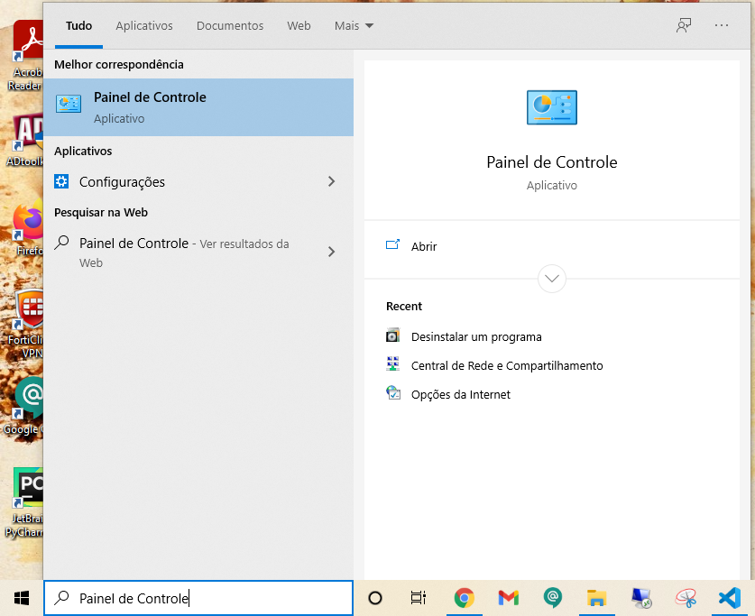
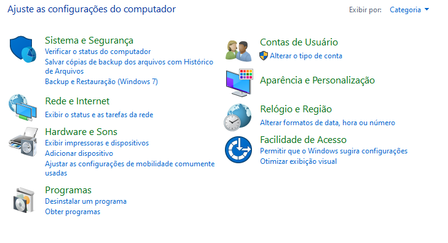
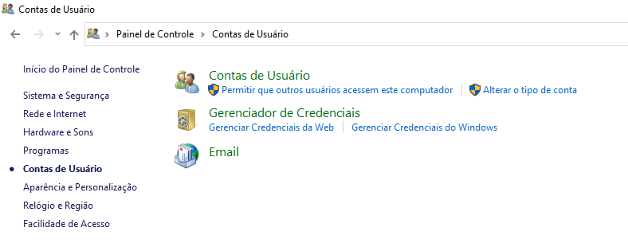
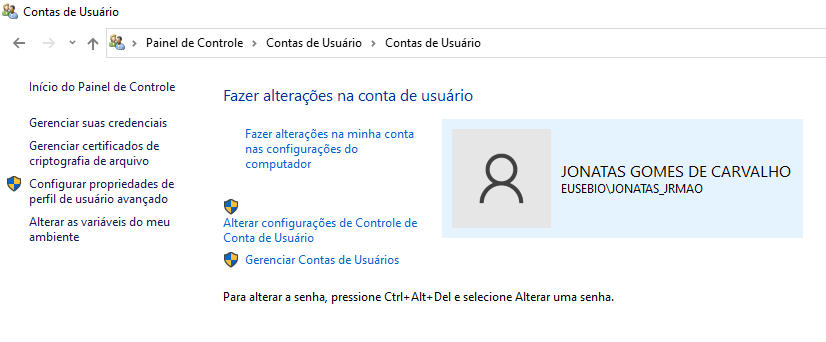
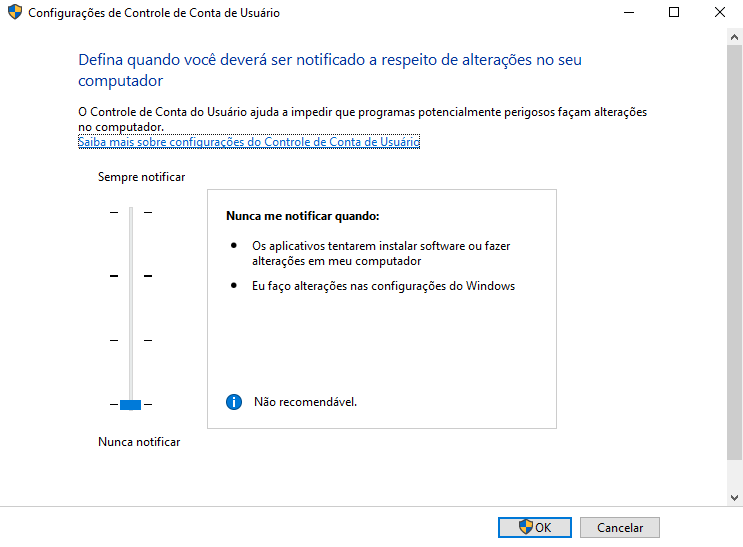

1. Digite Painel de Controle na barra de pesquisa do Windows
2. Clique em Contas de Usuário
3. Clique novamente em Contas de Usuário
4. Clique em Alterar configurações de Controle de Conta de Usuário
5. Diminua a barrinha até o fim e clique em Ok
